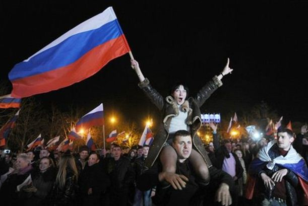

La crise en Ukraine est fortement alimentée par l'Occidental qui a choisi quels étaient les « bons » et les « méchants » donnant d'emblée leur aval aux putschistes sans relever le fait que parmi ceux-ci figuraient des néo-nazis jusqu'alors peu fréquentables qui se révélèrent paradoxalement alliés du jour au lendemain ni d'ailleurs, sans trop se poser de questions sur la provenance réelle des tirs sur la place Maïdan qui firent tant de morts et dont aujourd'hui bon nombre d'observateurs qui étaient sur place à l'époque se posent la question de savoir s'ils n'ont pas été volontairement dirigés de chaque côté des barricades de façon à faire exploser en guerre civile une tension déjà chauffée à blanc.
Pour l'Amérique toute puissante, l'Union européenne et l'OTAN ne sont que des instruments au service d'une guerre économique dans laquelle l' « Oncle Sam » doit obligatoirement tenir le haut du podium! Il faut pour cela une Europe alliée de l'OTAN, alliée des Etats-Unis mais une Europe suffisamment faible sur un plan politique pour ne pas apparaître comme un contrepoids face à la puissance américaine. Enfin, plus que tout, avancée de l'OTAN sur toutes les positions autour de la Fédération de Russie devenue ennemie N°1 de Washington dans l'économie mondiale (car à mi-chemin entre le marché européen et le marché asiatique) et, pour se faire, recréer toutes les conditions d'une nouvelle Guerre froide et, pourquoi pas d'un nouveau Rideau de Fer! Sauf que, cette fois-ci le rideau ne sera plus soviétique mais atlantiste ! Pour arriver à leurs fins, il faut à nos dirigeants entretenir coûte que coûte un profond sentiment anti-russe via leurs discours et les médias...
La priorité de nos dirigeants n'est donc pas le libre choix à l'auto-détermination des peuples, auquel cas, toute action en ce sens pourrait être vue comme une liberté à décider de son avenir. Loin de là ! Les musulmans afghans ont été armés par les Occidentaux contre les Soviétiques. Les Occidentaux ont soutenu la rébellion en Tchétchénie malgré l'intervention de milices islamistes extérieures. Les Occidentaux ont soutenu l'indépendance du Kosovo dans sa forme islamisée contre les Serbes orthodoxes soutenus, eux, par Moscou et ce, encore une fois, malgré le fait que le Kosovo était historiquement serbe. Les Occidentaux ont soutenu le régime de Géorgie contre les séparatistes d’Ossétie du Sud pro-russes (enfin, surtout bon nombre de politiciens américains extrémistes mais non des moindres comme Sarah Palin).
Réunion entre le président républicain Ronald Reagan et des moudjahidines afghans dans les années 1980 à la Maison blanche. En 1985, Reagan comparait les talibans afghans aux « pères fondateurs des Etats-Unis ».
Les Occidentaux continuent de soutenir l'opposition rebelle islamiste en Syrie contre le pouvoir de Bachar al-Assad quand Moscou essaye au contraire le dialogue avec celui-ci. Enfin, les Occidentaux soutiennent un gouvernement à Kiev dont on se demande quelle légitimité il peut avoir pour la seule raison qu'il s'oppose à l'indépendance des Républiques pro-russes qui justement, par leur histoire, ont toujours été liées à la Russie. En fait, le camp occidental ne s'est jamais engagé en faveur du Droit international multilatéral ni en faveur d'une quelconque logique historique mais uniquement selon la position des différentes régions, des différents peuples. Pour paraphraser la Fontaine, nous pourrions dire :
« Selon que vous serez anti ou pro-russes
Les jugements occidentaux vous rendront blancs ou noirs »
A ce jeu, si demain une région d'Europe de l'Est, du Caucase ou d'Asie centrale fait sécession d'avec le pays auquel elle a été rattachée à la chute du communisme pour se rapprocher de Moscou, elle sera condamnée. Si au contraire elle fait sécession d'avec la Fédération du Russie elle sera soutenue. Non seulement les Occidentaux parachèvent l’œuvre d'Hitler de démantèlement de l'Europe historique mais ils remodèlent à leur façon le monde avec l'OTAN comme arme principale alors même que le Pacte de Varsovie, lui, n'existe plus depuis 1991… Et pour cela, il faut isoler la Russie, diaboliser Vladimir Poutine, et surtout, briser l'Union douanière eurasiatique dans laquelle l'Ukraine s'apprêtait en entrer avant le putsch du pro-occidental Petro Porochenko ! Les OGM américains auraient-ils le goût du sang des enfants du Donbass ? Raccourci facile ou questionnement pertinent ?!
La Russie, depuis 1991, a soutenu tant bien que mal l'unité de l'Ukraine malgré des problématiques territoriales et économiques de fond. Durant des années, des accords bilatéraux Kiev / Moscou ont laissé envisager une certaine unité du pays, des mariages mixtes, des investissements d'entreprises privées russes en Ukraine, des accords militaires, etc... En moins d'un an, non seulement ces efforts ont été réduit à néant mais, de plus, la guerre civile a profité aux politiciens et aux médias occidentaux dans leur propagande ouvertement anti-russe ! La pression diplomatique a constamment été sur le dos de Vladimir Poutine. Pourquoi n'est-elle pas sur les intérêts économiques états-uniens? Pourquoi n'est-elle pas sur des vecteurs CIA / Mosanto qui verraient certainement d'un bon œil le fait de s'approprier les terres ukrainiennes tout en plaçant toute l'Europe occidentale sous leur coupe économique?
La crise en Ukraine a deux facettes, l'une géopolitique et géostratégique, c'est la facette brute, l'autre facette correspond à la médiatisation qu'on lui porte, c'est la facette de fond, avec tout le reliquat anti-slave basique occidental limite raciste et un détournement historique total au profit d'une politique et d'une médiatisation radicalement anti-russe, enfin, surtout anti-Poutine. Nous avons une superpuissance, les Etats-Unis qui n'ont jamais digéré le redressement de la Russie avec les mandats successifs Medvedev / Poutine.
Ils pensaient rester à jamais les maîtres uniques du monde après 1991 et cela est à mettre en relation avec un certain isolement économique de leur part. Qu'on le veuille ou non, les Etats-Unis ne sont pas vraiment partenaires et encore moins maîtres d'une union douanière internationale. Il existe une quantité importante d'unions douanières de par le monde, Amérique du Sud, Asie du Sud-Est, Union européenne et les Etats-Unis ont tenté une union nord-américaine qui se rapprocherait apparemment de ce qu'ils voudraient imposer à l'Europe occidentale, soit, le Marché transatlantique. A l'Est se profilait une union douanière eurasiatique avec la Russie comme fer de lance associée à la Chine, le Belarus, le Kazakhstan et à laquelle devait participer l'Ukraine. Dans ce contexte, l'Ukraine entrait dans un marché gigantesque, porteur car composé de pays émergeants, donc très demandeurs en développement. Elle signait pour jusqu'en 2024 un prolongement du bail de la flotte russe des ports de Crimée (cette même flotte qui aurait pu se faire réviser directement dans les arsenaux ukrainiens), le pays restait évidemment stable. Le problème que l'Ukraine n'a pas connu de miracle économique à la chute de l'URSS et était peu à peu entrée en crise économique. La Russie a poursuivi des livraisons énergétiques, a assuré une cohabitation pacifique ainsi que des relations économiques importantes. Les entreprises russes en Ukraine sont nombreuses et plus encore les couples mixtes russo-ukrainiens. Je dirais que la Russie a fait ce qu'elle a pu, après tout, l'Ukraine était indépendante! On pourrait presque féliciter Moscou qu'une crise similaire à celle-ci ne soit pas apparue avant car les problèmes du Donbass et de la Crimée ne sont pas nouveaux, ils datent de 1991 !
Le tournant c'est 2013 quand, avec les crises grecque, italienne, espagnole au sein de l'Union européenne, le marché eurasiatique semblait plus ouvert! C'est à ce moment précis qu'entrèrent en jeux des intérêts américains. Pour mieux imposer leur Traité transatlantique à l'Europe, l'idéal était de se positionner en chien de garde contre « l'ogre russe » comme au temps de la Guerre froide. Tout a été fait pour nuire à la réputation de Viktor Ianoukovitch et pour pousser au pouvoir Petro Porochenko, radicalement pro-occidental.
Il dénonça l'Union eurasiatique au profit d'un tournant vers le marché européen, il dénonça le bail de la flotte russe en Crimée au profit d'un tournant vers l'OTAN, il dénonça la langue russe ancestrale dans les régions de l'Est au seul profit de l'ukrainien. Dès lors, ce furent les incidents très rudes sur la place Maïdan à Kiev et les fameux tirs venant « d'on ne sait où ». Le but était d'enclencher une guerre civile tout en portant un coup, si possible, fatal à l'Union eurasiatique et isoler Vladimir Poutine sur la scène internationale.
Cette guerre civile a été entretenue chez nous par les politiciens et les médias par deux erreurs fondamentales, historiques et sémantiques. On entend, par exemple, que Vladimir Poutine a annexé la Crimée. Cela sous-entend que la guerre lui aurait été profitable. En fait, si on analyse le développement du conflit, son seul profit c'était au contraire une Ukraine stable car dans une guerre civile il aurait pu perdre la Crimée au profit de l'OTAN ! Déjà, analyse sujette à caution quand on parle d' « annexion », mais, surtout, erreur historique car on annexe en principe un territoire qui ne nous appartient pas. Or, la Crimée est russe qu'on le veuille ou non. Ce que beaucoup de personnes ne comprennent pas c'est que l'URSS s'est construite sur des Etats existants ou des proto-Etats en naissance qui accédèrent plutôt bien à leur indépendance en 1991 mais aussi sur des territoires qui n'avaient jamais été administrés au préalable comme dans le Caucase ou en Ukraine, où il n'y a jamais eu de pouvoir (élu ou royauté), pas de constitution, pas de capitale et encore moins de frontières bien définies. Nous arrivons alors sur l'erreur sémantique quand on dit que Nikita Khrouchtchev a offert la Crimée à l'Ukraine en 1954. C'est totalement faux ! Il a administrativement détaché la Crimée de la République Socialiste Soviétique Fédérative de Russie pour la rattacher à la République Socialiste Soviétique d'Ukraine. Les gens se fichaient de savoir à quelle République Socialiste Soviétique la Crimée appartenait car chacun était soviétique au sein de l'URSS avec le russe en langue commune et une capitale nationale, Moscou. Ce rattachement a été fait en grande partie pour commémorer le ralliement des Cosaques au pouvoir tsariste russe en 1654 alors qu'ils étaient en conflit contre l'Empire polonais. Par là-suite, la Crimée fut largement défendue par Catherine II dans les guerres contre l'Empire ottoman pour le contrôle de la Mer noire. Entre 1954 et 1991, la Crimée était russe de culture, dépendante administrativement de Kiev mais dirigée via la soviétisation depuis Moscou. En 1991, elle s'est retrouvée une terre russe rattachée malgré elle à l'Ukraine qui accédait enfin pour la première fois à sa vraie naissance, car l'Ukraine en tant que nation est bien née en 1991 ! Le Donbass c'est un peu la même chose, on comprend mieux alors que l'Ukraine ne soit pas un pays fini mais encore en mutation.
Un mot maintenant sur les forces en présence. Il faudrait être aveugle pour ne pas penser que Moscou n'appuie pas d'une manière ou d'une autre les séparatistes du Donbass mais il faut vraiment être menteur pour affirmer que les Russes ont envahi l'Ukraine ce qui est une parfaite idiotie. Les séparatistes sont d'abord des civils mais des civils d'une foi à toute épreuve car ils défendent leur terre, leur culture, leur histoire. Ils sont dans le même état d'esprit que les poilus français de Verdun, à savoir « devant, les sauvages, derrière nous, nos femmes, nos enfants, nos villages ». Dans ces conditions, l'avantage psychologique est de leur côté ! Du côté kiéviste, nous avons, en fait, trois armées en une. La première, le fer de lance en quelque sorte, est constituée de bataillons civils fortement armés et très durs, revendiquant ouvertement leur attachement au nazisme. Ils se réclament des collaborationnistes ukrainiens de la 2nde Guerre mondiale qui combattaient l'Armée rouge (dans la réalité, qui firent surtout des tristes pogroms contre les Juifs leurs seuls hauts faits de guerre et qui semèrent la terreur dans leur propre population!).
La deuxième armée est l'armée régulière ukrainienne mais elle-même très divisée entre les soldats de la troupe jusqu'aux sous-officiers qui n'ont aucune envie de poursuivre cette guerre fratricide et, au contraire, les officiers supérieurs qui ne rêvent que de combats pour une solde supplémentaire et quelques galons de plus à leurs épaulettes et qui ont fait allégeance aux membres de l'OTAN. La troisième armée n'en n'est pas une, c'est celle des mobilisés qui n'ont aucune envie de mourir. C'est une armée qui n'a aucune formation, des civils à qui on passe un uniforme, à qui on donne un fusil et à qui on dit « vas te faire tuer ». Depuis 2014, les hommes désertent ou fuient les mobilisations avant d'être incorporés. Des centaines, voire des milliers d'Ukrainiens ont trouvé refuge avec leurs familles en Pologne et même en Russie (un comble !) pour échapper à ces mobilisations et, ce, dans le silence médiatique total des médias occidentaux, comme de bien entendu ! Voilà ce que l'Occident montre comme étant la « vaillante armée ukrainienne ». En fait de vaillante, les officiers supérieurs ont vendu leur âme à l'OTAN, les troupes fuient les combats directs contre les séparatistes et le plus souvent se contentent de bombarder les centres-villes et les populations civiles du Donbass engendrant des milliers de morts depuis le début des hostilités, ou simplement, désertent, fuient la mobilisation. En fait, les seuls à être vraiment vaillants au sens militaire du terme sont les jeunes idéalistes des bataillons néo-nazis ! Bravo l'Europe de les glorifier ! Dois-je rappeler qu'au début 2015 nous avons commémoré le 70ème anniversaire de la libération du camp de concentration d'Auschwitz ? Remarquez, Petro Porochenko y fut invité... un comble quelque part !
18 décembre 2014 : Porochenko présente une loi au Parlement pour rejoindre l'OTAN
Notre génération a raté un coche, un rendez-vous avec l'histoire. C'est la construction de l'axe Paris / Berlin / Moscou à la chute du bloc de l'Est. Plutôt que de dissoudre l'OTAN, celui-ci s'est fait de plus en plus impérialiste. A la chute du bloc de l'Est en 1991, les Occidentaux avaient fait la promesse à Moscou que l'OTAN ne s'élargirait pas plus loin que les frontières de l'ex-Allemagne de l'Est dans le cadre de la réunification allemande. Aujourd'hui, les Russes affirment avec raison: « Notre erreur à l'époque, c'est de les avoir cru ! ». Plutôt que d'organiser un soutien à un passage en douceur à l'économie de marché des anciens pays communistes, nous les avons littéralement balancés dans une mondialisation sauvage ultra-libérale dont - un comble quelque part, nous nous sommes réjouis ! - tout en entourant la Fédération de Russie de bases de l'OTAN de plus en plus nombreuses. Nous avons « vaincu la bête communiste, il nous reste à écraser la culture slave ». C'est triste à pleurer mais le résultat aujourd'hui c'est bel et bien la diabolisation, non seulement du Président russe Vladimir Poutine, mais de toute la société russe dans son ensemble.
Ces malheureux évènements ukrainiens ont aussi révélé un abyme de méconnaissances historiques de la part de la classe médiatico-politique. Nous ne pouvons pas demander au grand public un savoir universitaire en la matière mais nous serions en droit de l'exiger de la part des journalistes... et d'objectivité par là même occasion ! Ce n'est pas le cas ! Obnubilés par la sacro-sainte démocratie et Droits de l'Homme qui seraient - soi-disant - continuellement bafoués en Russie, tout positionnement géopolitique du Kremlin ne peut être que « mauvais ». Là-encore, le « Poutine-bashing » fait fureur en Occident mais cela rappelle un fait majeur et triste de la mémoire collective humaine, c'est qu'à force de diaboliser ouvertement, le peuple lui-même ne réfléchit plus et rejette tout ce qui porte le nom, ou est en relation avec ce qui est diabolisé. Personne ne se justifie réellement ou non sur la réalité du prétendu manque de démocratie en Russie, il suffit juste de prononcer le mot russe pour être regardé de travers « Ah, ceux qui ont envahi l'Ukraine et qui assassinent leurs opposants ? ». Non seulement, cela relève d'un affaiblissement crucial de chacun de sa propre liberté de jugement mais aveugle aussi chacun sur sa propre politique occidentale. C'est nous les donneurs de leçons ? Nous qui avons imposé un Traité européen suite à un vote négatif du peuple ? Nous qui avons fichu en l'air des peuples et des nations en Libye et en Irak ? Cette radicalisation anti-russe qui coupe en deux notre histoire et notre culture commune justifie-t-elle, en plus, un alignement géo-stratégique, économique, culturel et politique quasi-systématique sur Washington ? Tout le temps qu'on s'empiffrera de Mac-Do devant nos chers programmes TV d'outre-atlantique, la question ne se posera même pas, il suffira juste de l'imposer tranquillement à un peuple passif.
Encore une fois, le rattachement de la Crimée à la Fédération de Russie était la meilleure solution.
On ne peut pas refaire l'histoire, ce qui a été fait, en bien ou en mal est écrit à jamais, mais c'est le 8 décembre 1991, quand le Président de la République Socialiste Fédérative de Russie Boris Eltsine avec ses homologues biélorusse Stanislav Chouchkevitch et ukrainien Leonid Kravtchouk décrétèrent la dissolution de l'URSS et la naissance d'une Communauté d'Etats indépendants (la CEI) que le problème du Donbass et de la Crimée auraient dû être soulevés et traités dans la foulée.
Le problème qu'en 1991, la Russie sortait totalement déstabilisée sur un plan économique et politique de la désagrégation de l'URSS. Elle n'avait aucun poids diplomatique à ce moment. Les zones historiquement russes de l'Ukraine se sont retrouvées intégrées malgré elles dans un Etat nouvellement indépendant ! Ce que beaucoup de personnes ne comprennent pas c'est que l'Etat ukrainien est né en 1991. L'Ukraine est une zone culturelle et géographique ancestrale, traversée par des courants polonais, lituaniens, tatars, russes ou encore mongols mais n'a jamais été une Nation au sens « indépendant » du terme, hormis depuis 1991. Les zones de Crimée et du Donbass sont russes depuis des siècles, avec une nuance ethnique pour la Crimée, certes, mais sous la géographie et la politique russe depuis au moins Catherine II. Durant l'ère soviétique l'Ukraine n'était pas une « Nation » mais une République Soviétique dépendante de l'URSS et composée de territoires ukraïno-russes. Je crois que c'est cela surtout que beaucoup de personnes ne comprennent pas, la différence entre un Etat indépendant et une République Soviétique au sein de l'URSS ! C'est cette entité soviétique ukraïno-russe (et non pas seulement ukrainienne !) qui est devenue indépendante en 1991 alors arrêtons le « Poutine-bashing » ou le mépris anti-russe ! De 1991 à 2013, la Russie a réussi à maintenir l'équilibre et la paix dans cette région, on devrait même remercier les Russes plutôt que de les mépriser ainsi ! Il aura suffi en 2013 d'un soulèvement ultra-nationaliste (à consonance néo-nazie...) soutenu par la CIA, l'OTAN, l'Union européenne et, franchement, dirigé depuis Washington, pour faire basculer cet équilibre en déchirement et en guerre civile ! Alors, laissons un peu les Russes tranquilles et la Crimée n'est pas une annexion russe, elle a simplement rejoint sa mère-patrie !
En 2016, l'Ukraine vit, non seulement, une crise monétaire très grave, mais aussi identitaire au-delà de ce que l'on imagine en Europe car le ventre mou de la population ukrainienne (la majorité silencieuse) ne représente certainement pas les jeunes fascistes partis guerroyer contre les séparatistes mais plutôt des hommes qui n'ont aucune envie de mourir dans un conflit qui les dépasse et pour un gouvernement pro-occidental dont ils se fichent pas mal ! Cette crise identitaire est surenchérie par la gravité de la crise économique et ce que Petro Porochenko redoute le plus c'est peut-être un « Maïdan social » où il risquerait de terminer comme Ceausescu! Quand un gouvernement est aux abois à ce point, la paix ne peut pas être une solution, à moins d'être un dictateur en puissance, chose qu'il n'est pas. Ce n'est qu'un pantin qui ne reste en place que parce qu'il est soutenu par Washington, l'OTAN et l'Europe occidentale mais qui, isolé, ne tiendrait peut-être pas plus de 6 mois face à son propre peuple ! Dans cette crise économique, l'aide financière occidentale sert surtout à la junte kiéviste à renforcer son armée (contre les Russes ? contre les séparatistes ? contre un « Maïdan social » ?).
On comprendrait aussi beaucoup mieux la crise ukrainienne si, plutôt que de prendre les évènements de manière primaire, on les examinait en profondeur. La première question qu'il faudrait se poser c'est « Qu'est-ce que l'Ukraine ? », la deuxième question c'est « Est-ce que, réellement, le puzzle des Nations du monde entier est-il définitivement figé ? », enfin, troisième question « Quant est-il du droit des peuples à l'autodétermination ? ». Nous répétons sans cesse en Occident que l'Ukraine doit conserver coûte que coûte son intégrité géographique. Si nous partons de ce principe, nous pourrions aussi parler d'intégrité étatique, politique, structurelle, etc... Bon nombre de nations issues de l'ex-URSS ont retrouvé un semblant d'unité à la chute de l'URSS. La Biélorussie, le Kazakhstan, la Russie évidemment et même les Etats baltes. Le problème de l'Ukraine c'est qu'elle n'a eu un gouvernement interne que sous son intégration à l'URSS sous la forme de la République Socialiste Soviétique d'Ukraine mais ce ne fut jamais un vrai état auparavant hormis une malheureuse tentative au début du XXe siècle mais balayée par les tourments de la 1ère Guerre mondiale. C'est, non seulement, un pays gigantesque au niveau géographique, mais constamment partagé par différents Empires et traversé par différentes cultures. Il est vrai qu'il existe des Ukrainiens qui ont une langue ukrainienne et un folklore ukrainien (très proche du russe au demeurant) mais qui vivent au sein d'un pays dont les terres ont toujours été partagées avec des Lituaniens, des Polonais, des Russes, des Roumains, des Hongrois, des Tatars... Nous parlons souvent de la Kiévie comme étant le berceau de la Rus' primitive mais, n'oublions pas qu'au Moyen-âge et quelques siècles qui suivirent il y avait deux Empires dominants en Europe centrale et de l'Est, la Pologne et la Lituanie, qui, tous deux se sont affrontés sur le partage des terres ukrainiennes occidentales. La Pologne a terriblement souffert au cours des deux derniers siècles, XIXe et XXe siècles et le gouvernement polonais aime à le rappeler, ceci est tout à fait vrai, il ne s'agit nullement de minimiser cette souffrance polonaise, mais, paradoxalement, on semble beaucoup plus facilement oublier l'époque où c'était justement la Pologne qui dominait cette partie du monde, époque à laquelle une grande partie des terres ukrainiennes du sud-ouest faisaient partie de leur Empire. Si nous partons du principe que c'est plus les Etats-Unis qui sont à l'origine de la crise en Ukraine en ayant poussé au putsch le pro-occidental Petro Porochenko, il ne faut pas oublier qu'au niveau diplomatique, la Pologne souffle parfois sur les braises. Aurait-elle envie de reconstituer son ancien Empire en récupérant le district de la ville de Lviv dans une éventuelle désagrégation de l'Ukraine? François Hollande et Angela Merkel feraient peut-être bien de faire une halte à Varsovie dans leurs ballets diplomatiques ! En fait, cette zone gigantesque a surtout été avant l'URSS une sorte de no man's land, non pas dans le sens de sa population, réelle et diverse, mais dans le sens d'absence de vrai pouvoir unitaire. Ce fut d'ailleurs le cas de pas mal d'autres zones comme dans le Caucase où on a aussi assisté à l'administration de régions sous le régime soviétique qui n'étaient que très partiellement gérées avant 1917. Le problème que tout ça s'est retrouvé indépendant en 1991 ! La chute de l'URSS a recréé une carte postale noire et blanche de l'Europe du début du XXe siècle. Le problème que nous avons commis l'erreur de contempler cette carte postale avec nos yeux contemporains du début du XXIe siècle, gravissime erreur ! C'est de là que vient notre faute ! Il fallait, au contraire, adapter notre vision contemporaine à cette carte postale vieille d'un siècle qui ressurgissait soudainement et tenter, au mieux, de retracer les nouvelles frontières des peuples, et, ce, de manière pacifique et de manière à contenter tout le monde. Au lieu de cela, François Hollande déclara « les frontières sont immuables ! »...
Il est franchement naïf de penser que la déstabilisation de l'Ukraine sert les intérêts russes et que ce serait un plan orchestré par Vladimir Poutine. Non seulement c'est très naïf de penser cela mais cela va surtout dans le contre-sens total d'une Ukraine qui, pour Moscou, devait rester stable pour pouvoir conserver les ports militaires de la Mer noire et intégrer la grande union douanière eurasiatique. Il est de même d'une immense naïveté de penser que l'arrivée de force au pouvoir à Kiev d'un pro-occidental, qui, du jour au lendemain a remis en cause l'ensemble des bases de cette stabilité ce ferait sans problèmes. Il était évident que cela aurait entraîné un déchirement du pays, quelle personne douée d'un minimum de bon sens pourrait penser le contraire ? Preuve en est aujourd'hui ! Quelque part, la stabilité de l'Ukraine a tenu pendant des années grâce à la diplomatie russe et elle a éclaté sous la pression américaine ! Et maintenant on s'alarme de la guerre civile ! Nous revenons alors au point essentiel, l'Ukraine est-elle « finie » dans sa stabilité géographique, sociétale et étatique ? Certainement pas ! Elle fut entretenue comme cela de manière artificielle avec l'aide de Moscou mais depuis ce coup d'Etat pro-occidental elle se retrouve dénudée, on lui a ôté le « manteau », artificiel peut-être, mais qui existait et qui en faisait une « Nation » même si, dans son cas, le terme est mal approprié. Il faut que l'Ukraine devienne une vraie Nation si possible en cessant au plus vite cette horrible guerre fratricide, mais j'ai beaucoup de peine à imaginer la naïveté avec laquelle les Occidentaux ont géré cette crise et avec quelle méconnaissance historique abyssale.
Au début de l'année 2015, les Accords de Minsk - 2 laissaient entrevoir une éclaircie. S'ils furent signés c'est en grande partie parce que les Etats-Unis ne participèrent pas. S'ils ne furent pas respectés c'est aussi en grande partie parce que les Etats-Unis ne participèrent pas... La pierre angulaire des Accords de Minsk- 2 concerne la réforme constitutionnelle qui devait faire apparaître l'émergence d'une Fédération, seule structure possible pour une paix durable en Ukraine. Aujourd'hui cela semble « oublié »... J'ai l'impression que plus personne ne parle de ces fondamentaux ! Pire, quand le 21 juillet 2016, le Président ukrainien Petro Porochenko a rendu visite au Président français a Paris, ce dernier s'est empressé, non pas de faire pression sur son homologue ukrainien pour amener à bien ces accords, mais a de nouveau fait pression sur la Russie ! François Hollande s'était grandi pour avoir mené à bien ces accords, il se parjure l'année d'après... On ne va quand même pas demander à Moscou de mettre en place une réforme qui concerne l'Ukraine ?... ou admettons que l'Ukraine est russe et le problème est réglé !
L'attitude géopolitique internationale des Etats-Unis me fait penser à un bambin mis à l'écart dans un bac à sable. Il n'aura de cesse de se plaindre, de briser la camaraderie des autres bambins, de détruire leurs châteaux de sable, de copiner avec untel contre tel autre...
L'attitude géoéconomique états-unienne reflète un peu cela. Seraient-ils si isolés face aux différents marchés mondiaux (Asie du Sud-est, Union eurasiatique, Union européenne, BRICS, etc...) qu'il leur faille les intégrer de force ou les réduire à néant afin de mieux s'imposer ? Comme, par exemple, tenter de détruire l'Union eurasiatique naissante qui aurait pu, justement, intégrer l'Ukraine (pièce de puzzle géographique, culturelle et économique avec l'Union européenne !) pour mieux nous imposer le Traité transatlantique ? Sur ce plan, Barack Obama aura réussi à ne pas faire livrer les Mistral à la Russie et à soutenir (même indirectement...) des milices néo-nazies du putschiste Petro Porochenko, peut-être très minoritaires dans l'esprit des Ukrainiens mais suffisantes pour amener le chaos dans un pays tout entier ! L'attitude convenable face aux Etats-Unis devrait alors être la même que celle face au bambin isolé dans le bac à sable. « Tu as le droit de jouer avec nous mais, il faut respecter certaines règles ». Le monde n'est plus à la Guerre froide et encore moins à une 3ème Guerre mondiale. Le monde n'est pas à vendre à une seule superpuissance, qui plus est, les Etats-Unis. Le monde tente d’œuvrer vers de nouvelles valeurs économiques et écologiques. Inutile de nous vendre de la « lutte contre le réchauffement climatique » d'un côté si c'est pour nous imposer du maïs transgénique ou du bœuf aux hormones, de l'autre ! Si nous sommes prêts à payer plus cher un café biologique issu d'une petite production du Pérou, nous ne sommes pas prêts à remplir notre caddie de supermarché de fromage Philadelphia! Nous devons tendre la main au bambin, car quoi qu'on en dise, les Etats-Unis restent une grande nation et un grand peuple, mais c'est à eux de respecter les règles et non à nous de nous soumettre... et à nous de regarder enfin vers l'Est car là est notre vrai avenir européen !